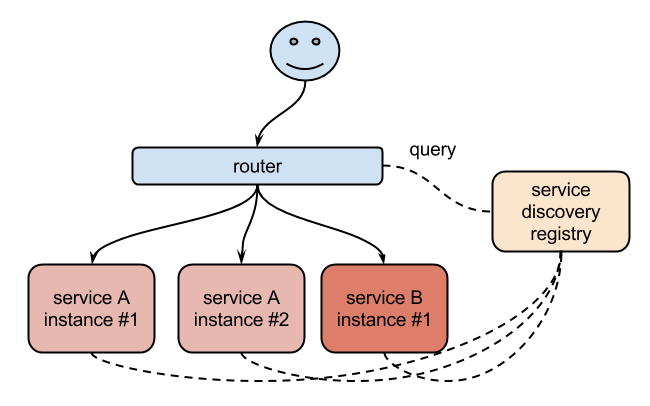
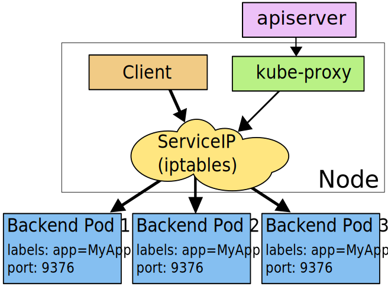

Service¶
我们前面的课程中学习了一些常用控制器的基本用法，我们也了解到 Pod 的生命是有限的，死亡过后不会复活了。然后我们知道可以用 ReplicaSet 和Deployment 来动态的创建和销毁 Pod，每个 Pod 都有自己的 IP 地址，但是如果 Pod 重建了的话那么他的 IP 很有可能也就变化了。这就会带来一个问题：比如我们有一些后端的 Pod 集合为集群中的其他应用提供 API 服务，如果我们在前端应用中把所有的这些后端的 Pod 的地址都写死，然后以某种方式去访问其中一个 Pod 的服务，这样看上去是可以工作的，对吧？但是如果这个 Pod 挂掉了，然后重新启动起来了，是不是 IP 地址非常有可能就变了，这个时候前端就极大可能访问不到后端的服务了。
遇到这样的问题该怎么解决呢？在没有使用 Kubernetes 之前，我相信可能很多同学都遇到过这样的问题，不一定是 IP 变化的问题，比如我们在部署一个WEB 服务的时候，前端一般部署一个 Nginx 作为服务的入口，然后 Nginx 后面肯定就是挂载的这个服务的大量后端服务，很早以前我们可能是去手动更改Nginx 配置中的 upstream 选项，来动态改变提供服务的数量，到后面出现了一些服务发现的工具，比如 Consul、ZooKeeper 还有我们熟悉的 etcd 等工具，有了这些工具过后我们就可以只需要把我们的服务注册到这些服务发现中心去就可以，然后让这些工具动态的去更新 Nginx 的配置就可以了，我们完全不用去手工的操作了，是不是非常方便。

同样的，要解决我们上面遇到的问题是不是实现一个服务发现的工具也可以解决？没错的，当我们 Pod 被销毁或者新建过后，我们可以把这个 Pod 的地址注册到这个服务发现中心去就可以，但是这样的话我们的前端应用就不能直接去连接后台的 Pod 集合了，应该连接到一个能够做服务发现的中间件上面，对吧？
为解决这个问题 Kubernetes 就为我们提供了这样的一个对象 - Service，Service 是一种抽象的对象，它定义了一组 Pod 的逻辑集合和一个用于访问它们的策略，其实这个概念和微服务非常类似。一个 Serivce 下面包含的 Pod 集合是由 Label Selector 来决定的。
比如我们上面的例子，假如我们后端运行了3个副本，这些副本都是可以替代的，因为前端并不关心它们使用的是哪一个后端服务。尽管由于各种原因后端的 Pod 集合会发送变化，但是前端却不需要知道这些变化，也不需要自己用一个列表来记录这些后端的服务，Service 的这种抽象就可以帮我们达到这种解耦的目的。
三种IP¶
在继续往下学习 Service 之前，我们需要先弄明白 Kubernetes 系统中的三种IP，因为经常有同学混乱。
- Node IP：Node 节点的 IP 地址
- Pod IP: Pod 的 IP 地址
- Cluster IP: Service 的 IP 地址
首先，Node IP 是 Kubernetes 集群中节点的物理网卡 IP 地址(一般为内网)，所有属于这个网络的服务器之间都可以直接通信，所以 Kubernetes 集群外要想访问 Kubernetes 集群内部的某个节点或者服务，肯定得通过 Node IP 进行通信（这个时候一般是通过外网 IP 了）
然后 Pod IP 是每个 Pod 的 IP 地址，它是网络插件进行分配的，前面我们已经讲解过
最后 Cluster IP 是一个虚拟的 IP，仅仅作用于 Kubernetes Service 这个对象，由 Kubernetes 自己来进行管理和分配地址。
定义 Service¶
定义 Service 的方式和我们前面定义的各种资源对象的方式类型，例如，假定我们有一组 Pod 服务，它们对外暴露了 8080 端口，同时都被打上了 app=myapp 这样的标签，那么我们就可以像下面这样来定义一个 Service 对象：
apiVersion: v1
kind: Service
metadata:
name: myservice
spec:
selector:
app: myapp
ports:
- protocol: TCP
port: 80
targetPort: 8080
name: myapp-http然后通过的使用 kubectl create -f myservice.yaml 就可以创建一个名为 myservice 的 Service 对象，它会将请求代理到使用 TCP 端口为 8080，具有标签 app=myapp 的 Pod 上，这个 Service 会被系统分配一个我们上面说的 Cluster IP，该 Service 还会持续的监听 selector 下面的 Pod，会把这些 Pod 信息更新到一个名为 myservice 的Endpoints 对象上去，这个对象就类似于我们上面说的 Pod 集合了。
需要注意的是，Service 能够将一个接收端口映射到任意的 targetPort。默认情况下，targetPort 将被设置为与 port 字段相同的值。可能更有趣的是，targetPort 可以是一个字符串，引用了 backend Pod 的一个端口的名称。因实际指派给该端口名称的端口号，在每个 backend Pod 中可能并不相同，所以对于部署和设计 Service，这种方式会提供更大的灵活性。
另外 Service 能够支持 TCP 和 UDP 协议，默认是 TCP 协议。
kube-proxy¶
前面我们讲到过，在 Kubernetes 集群中，每个 Node 会运行一个 kube-proxy 进程, 负责为 Service 实现一种 VIP（虚拟 IP，就是我们上面说的 clusterIP）的代理形式，现在的 Kubernetes 中默认是使用的 iptables 这种模式来代理。
iptables¶
这种模式，kube-proxy 会监视 apiserver 对 Service 对象和 Endpoints 对象的添加和移除。对每个 Service，它会添加上 iptables 规则，从而捕获到达该 Service 的 clusterIP（虚拟 IP）和端口的请求，进而将请求重定向到 Service 的一组 backend 中的某一个 Pod 上面。我们还可以使用 Pod readiness 探针 验证后端 Pod 可以正常工作，以便 iptables 模式下的 kube-proxy 仅看到测试正常的后端，这样做意味着可以避免将流量通过 kube-proxy 发送到已知失败的 Pod 中，所以对于线上的应用来说一定要做 readiness 探针。

iptables 模式的 kube-proxy 默认的策略是，随机选择一个后端 Pod。
比如当创建 backend Service 时，Kubernetes 会给它指派一个虚拟 IP 地址，比如 10.0.0.1。假设 Service 的端口是 1234，该 Service 会被集群中所有的 kube-proxy 实例观察到。当 kube-proxy 看到一个新的 Service，它会安装一系列的 iptables 规则，从 VIP 重定向到 per-Service 规则。 该 per-Service 规则连接到 per-Endpoint 规则，该 per-Endpoint 规则会重定向（目标 NAT）到后端的 Pod。
ipvs¶
除了 iptables 模式之外，kubernetes 也支持 ipvs 模式，在 ipvs 模式下，kube-proxy 监视 Kubernetes 服务和端点，调用 netlink 接口相应地创建 IPVS 规则， 并定期将 IPVS 规则与 Kubernetes 服务和端点同步。该控制循环可确保 IPVS 状态与所需状态匹配。访问服务时，IPVS 将流量定向到后端 Pod 之一。
IPVS 代理模式基于类似于 iptables 模式的 netfilter 钩子函数，但是使用哈希表作为基础数据结构，并且在内核空间中工作。 所以与 iptables 模式下的 kube-proxy 相比，IPVS 模式下的 kube-proxy 重定向通信的延迟要短，并且在同步代理规则时具有更好的性能。与其他代理模式相比，IPVS 模式还支持更高的网络流量吞吐量。所以对于较大规模的集群会使用 ipvs 模式的 kube-proxy，只需要满足节点上运行 ipvs 的条件，然后我们就可以直接将 kube-proxy 的模式修改为 ipvs，如果不满足运行条件会自动降级为 iptables 模式，现在都推荐使用 ipvs 模式，可以大幅度提高 Service 性能。
IPVS 提供了更多选项来平衡后端 Pod 的流量，默认是 rr，有如下一些策略：
- rr: round-robin
- lc: least connection (smallest number of open connections)
- dh: destination hashing
- sh: source hashing
- sed: shortest expected delay
- nq: never queue
不过现在只能整体修改策略，可以通过 kube-proxy 中配置 –ipvs-scheduler 参数来实现，暂时不支持特定的 Service 进行配置。

我们也可以实现基于客户端 IP 的会话亲和性，可以将 service.spec.sessionAffinity 的值设置为 "ClientIP" （默认值为 "None"）即可，此外还可以通过适当设置 service.spec.sessionAffinityConfig.clientIP.timeoutSeconds 来设置最大会话停留时间（默认值为 10800 秒，即 3 小时）:
apiVersion: v1
kind: Service
spec:
sessionAffinity: ClientIP
...亲和性
Service 只支持两种形式的会话亲和性服务：None 和 ClientIP，不支持基于 cookie 的会话亲和性，这是因为 Service 不是在 HTTP 层面上工作的，处理的是 TCP 和 UDP 包，并不关心其中的载荷内容，因为 cookie 是 HTTP 协议的一部分，Service 并不知道它们，所有会话亲和性不能基于 Cookie。
Service¶
我们在定义 Service 的时候可以指定一个自己需要的类型的 Service，如果不指定的话默认是 ClusterIP类型。
我们可以使用的服务类型如下：
-
ClusterIP：通过集群的内部 IP 暴露服务，选择该值，服务只能够在集群内部可以访问，这也是默认的服务类型。
-
NodePort：通过每个 Node 节点上的 IP 和静态端口（NodePort）暴露服务。NodePort 服务会路由到 ClusterIP 服务，这个 ClusterIP 服务会自动创建。通过请求
NodeIp:NodePort，可以从集群的外部访问一个 NodePort 服务。 -
LoadBalancer：使用云提供商的负载局衡器，可以向外部暴露服务。外部的负载均衡器可以路由到 NodePort 服务和 ClusterIP 服务，这个需要结合具体的云厂商进行操作。
-
ExternalName：通过返回
CNAME和它的值，可以将服务映射到externalName字段的内容（例如， foo.bar.example.com）。
NodePort 类型¶
如果设置 type 的值为 "NodePort"，Kubernetes master 将从给定的配置范围内（默认：30000-32767）分配端口，每个 Node 将从该端口（每个 Node 上的同一端口）代理到 Service。该端口将通过 Service 的 spec.ports[*].nodePort 字段被指定，如果不指定的话会自动生成一个端口。
需要注意的是，Service 将能够通过 spec.ports[].nodePort 和 spec.clusterIp:spec.ports[].port 而对外可见。
接下来我们来给大家创建一个 NodePort 的服务来访问我们前面的 Nginx 服务：(service-nodeport-demo.yaml)
apiVersion: v1
kind: Service
metadata:
name: myservice
spec:
selector:
app: myapp
type: NodePort
ports:
- protocol: TCP
port: 80
targetPort: 80
name: myapp-http创建该 Service:
$ kubectl apply -f service-demo.yaml然后我们可以查看 Service 对象信息：
$ kubectl get svc
NAME TYPE CLUSTER-IP EXTERNAL-IP PORT(S) AGE
kubernetes ClusterIP 10.96.0.1 <none> 443/TCP 27d
myservice NodePort 10.104.57.198 <none> 80:32560/TCP 14h我们可以看到 myservice 的 TYPE 类型已经变成了 NodePort，后面的 PORT(S) 部分也多了一个 32560 的映射端口。
ExternalName¶
ExternalName 是 Service 的特例，它没有 selector，也没有定义任何的端口和 Endpoint。对于运行在集群外部的服务，它通过返回该外部服务的别名这种方式来提供服务。
kind: Service
apiVersion: v1
metadata:
name: my-service
namespace: prod
spec:
type: ExternalName
externalName: my.database.example.com当访问地址 my-service.prod.svc.cluster.local（后面服务发现的时候我们会再深入讲解）时，集群的 DNS 服务将返回一个值为 my.database.example.com 的 CNAME 记录。访问这个服务的工作方式与其它的相同，唯一不同的是重定向发生在 DNS 层，而且不会进行代理或转发。如果后续决定要将数据库迁移到 Kubernetes 集群中，可以启动对应的 Pod，增加合适的 Selector 或 Endpoint，修改 Service 的 type，完全不需要修改调用的代码，这样就完全解耦了。
除了可以直接通过 externalName 指定外部服务的域名之外，我们还可以通过自定义 Endpoints 来创建 Service，前提是 clusterIP=None，名称要和 Service 保持一致，如下所示：
apiVersion: v1
kind: Service
metadata:
name: etcd-k8s
namespace: kube-system
labels:
k8s-app: etcd
spec:
type: ClusterIP
clusterIP: None
ports:
- name: port
port: 2379
---
apiVersion: v1
kind: Endpoints
metadata:
name: etcd-k8s # 名称必须和 Service 一致
namespace: kube-system
labels:
k8s-app: etcd
subsets:
- addresses:
- ip: 10.151.30.57 # Service 将连接重定向到 endpoint
ports:
- name: port
port: 2379 # endpoint 的目标端口上面这个服务就是将外部的 etcd 服务引入到 Kubernetes 集群中来。
获取客户端 IP¶
通常，当集群内的客户端连接到服务的时候，是支持服务的 Pod 可以获取到客户端的 IP 地址的，但是，当通过节点端口接收到连接时，由于对数据包执行了源网络地址转换（SNAT），因此数据包的源 IP 地址会发生变化，后端的 Pod 无法看到实际的客户端 IP，对于某些应用来说是个问题，比如，nginx 的请求日志就无法获取准确的客户端访问 IP 了，比如下面我们的应用：
apiVersion: apps/v1
kind: Deployment
metadata:
name: nginx
spec:
replicas: 3
selector:
matchLabels:
app: nginx
template:
metadata:
labels:
app: nginx
spec:
containers:
- name: nginx
image: nginx:1.7.9
ports:
- containerPort: 80
---
apiVersion: v1
kind: Service
metadata:
name: nginx
spec:
selector:
app: nginx
type: NodePort
ports:
- protocol: TCP
port: 80
targetPort: 80直接创建后可以查看 nginx 服务被自动分配了一个 32761 的 NodePort 端口：
$ kubectl get svc
NAME TYPE CLUSTER-IP EXTERNAL-IP PORT(S) AGE
kubernetes ClusterIP 10.96.0.1 <none> 443/TCP 28d
nginx NodePort 10.106.190.194 <none> 80:32761/TCP 48m
$ kubectl get pods -o wide
NAME READY STATUS RESTARTS AGE IP NODE NOMINATED NODE READINESS GATES
nginx-54f57cf6bf-nwtjp 1/1 Running 0 3m 10.244.3.15 ydzs-node3 <none> <none>
nginx-54f57cf6bf-ptvgs 1/1 Running 0 2m59s 10.244.2.13 ydzs-node2 <none> <none>
nginx-54f57cf6bf-xhs8g 1/1 Running 0 2m59s 10.244.1.16 ydzs-node1 <none> <none>我们可以看到这个3个 Pod 被分配到了 3 个不同的节点，这个时候我们通过 master 节点的 NodePort 端口来访问下我们的服务，因为我这里只有 master 节点可以访问外网，这个时候我们查看 nginx 的 Pod 日志可以看到其中获取到的 clientIP 是 10.151.30.11，其实是 master 节点的内网 IP，并不是我们期望的真正的浏览器端访问的 IP 地址：
$ kubectl logs -f nginx-54f57cf6bf-xhs8g
10.151.30.11 - - [07/Dec/2019:16:44:38 +0800] "GET / HTTP/1.1" 200 612 "-" "Mozilla/5.0 (Macintosh; Intel Mac OS X 10_14_5) AppleWebKit/537.36 (KHTML, like Gecko) Chrome/78.0.3904.108 Safari/537.36" "-"这个是因为我们 master 节点上并没有对应的 Pod，所以通过 master 节点去访问应用的时候必然需要额外的网络跳转才能到达其他节点上 Pod，在跳转过程中由于对数据包进行了 SNAT，所以看到的是 master 节点的 IP。这个时候我们可以在 Service 设置 externalTrafficPolicy 来减少网络跳数：
spec:
externalTrafficPolicy: Local如果 Service 中配置了 externalTrafficPolicy=Local，并且通过服务的节点端口来打开外部连接，则 Service 会代理到本地运行的 Pod，如果本地没有本地 Pod 存在，则连接将挂起，比如我们这里设置上该字段更新，这个时候我们去通过 master 节点的 NodePort 访问应用是访问不到的，因为 master 节点上并没有对应的 Pod 运行，所以需要确保负载均衡器将连接转发给至少具有一个 Pod 的节点。
但是需要注意的是使用这个参数有一个缺点，通常情况下，请求都是均匀分布在所有 Pod 上的，但是使用了这个配置的话，情况就有可能不一样了。比如我们有两个节点上运行了 3 个 Pod，假如节点 A 运行一个 Pod，节点 B 运行两个 Pod，如果负载均衡器在两个节点间均衡分布连接，则节点 A 上的 Pod 将接收到所有请求的 50%，但节点 B 上的两个 Pod 每个就只接收 25% 。
由于增加了externalTrafficPolicy: Local这个配置后，接收请求的节点和目标 Pod 都在一个节点上，所以没有额外的网络跳转（不执行 SNAT），所以就可以拿到正确的客户端 IP，如下所示我们把 Pod 都固定到 master 节点上：
apiVersion: apps/v1
kind: Deployment
metadata:
name: nginx
spec:
replicas: 3
selector:
matchLabels:
app: nginx
template:
metadata:
labels:
app: nginx
spec:
tolerations:
- operator: "Exists"
nodeSelector:
kubernetes.io/hostname: ydzs-master
containers:
- name: nginx
image: nginx:1.7.9
ports:
- containerPort: 80
---
apiVersion: v1
kind: Service
metadata:
name: nginx
spec:
externalTrafficPolicy: Local
selector:
app: nginx
type: NodePort
ports:
- protocol: TCP
port: 80
targetPort: 80更新服务后，然后再通过 NodePort 访问服务可以看到拿到的就是正确的客户端 IP 地址了：
$ kubectl logs -f nginx-ddc8f997b-ptb7b
182.149.166.11 - - [07/Dec/2019:17:03:43 +0800] "GET / HTTP/1.1" 200 612 "-" "Mozilla/5.0 (Macintosh; Intel Mac OS X 10_14_5) AppleWebKit/537.36 (KHTML, like Gecko) Chrome/78.0.3904.108 Safari/537.36" "-"服务发现¶
上面我们讲解了 Service 的用法，我们可以通过 Service 生成的 ClusterIP(VIP) 来访问 Pod 提供的服务，但是在使用的时候还有一个问题：我们怎么知道某个应用的 VIP 呢？比如我们有两个应用，一个是 api 应用，一个是 db 应用，两个应用都是通过 Deployment 进行管理的，并且都通过 Service 暴露出了端口提供服务。api 需要连接到 db 这个应用，我们只知道 db 应用的名称和 db 对应的 Service 的名称，但是并不知道它的 VIP 地址，我们前面的 Service 课程中是不是学习到我们通过 ClusterIP 就可以访问到后面的 Pod 服务，如果我们知道了 VIP 的地址是不是就行了？
环境变量¶
为了解决上面的问题，在之前的版本中，Kubernetes 采用了环境变量的方法，每个 Pod 启动的时候，会通过环境变量设置所有服务的 IP 和 port 信息，这样 Pod 中的应用可以通过读取环境变量来获取依赖服务的地址信息，这种方法使用起来相对简单，但是有一个很大的问题就是依赖的服务必须在 Pod 启动之前就存在，不然是不会被注入到环境变量中的。比如我们首先创建一个 Nginx 服务：(test-nginx.yaml)
apiVersion: apps/v1
kind: Deployment
metadata:
name: nginx-deploy
spec:
replicas: 2
selector:
matchLabels:
app: nginx
template:
metadata:
labels:
app: nginx
spec:
containers:
- name: nginx
image: nginx:1.7.9
ports:
- containerPort: 80
---
apiVersion: v1
kind: Service
metadata:
name: nginx-service
labels:
name: nginx-service
spec:
ports:
- port: 5000
targetPort: 80
selector:
app: nginx创建上面的服务：
$ kubectl apply -f test-nginx.yaml
deployment.apps "nginx-deploy" created
service "nginx-service" created
$ kubectl get pods
NAME READY STATUS RESTARTS AGE
...
nginx-deploy-75675f5897-47h4t 1/1 Running 0 53s
nginx-deploy-75675f5897-mmm8w 1/1 Running 0 53s
...
$ kubectl get svc
NAME TYPE CLUSTER-IP EXTERNAL-IP PORT(S) AGE
...
nginx-service ClusterIP 10.107.225.42 <none> 5000/TCP 1m
...我们可以看到两个 Pod 和一个名为 nginx-service 的服务创建成功了，该 Service 监听的端口是 5000，同时它会把流量转发给它代理的所有 Pod（我们这里就是拥有 app: nginx 标签的两个 Pod）。
现在我们再来创建一个普通的 Pod，观察下该 Pod 中的环境变量是否包含上面的 nginx-service 的服务信息：（test-pod.yaml）
apiVersion: v1
kind: Pod
metadata:
name: test-pod
spec:
containers:
- name: test-service-pod
image: busybox
command: ["/bin/sh", "-c", "env"]然后创建该测试的 Pod：
$ kubectl apply -f test-pod.yaml
pod "test-pod" created等 Pod 创建完成后，我们查看日志信息：
$ kubectl logs test-pod
...
KUBERNETES_PORT=tcp://10.96.0.1:443
KUBERNETES_SERVICE_PORT=443
HOSTNAME=test-pod
HOME=/root
NGINX_SERVICE_PORT_5000_TCP_ADDR=10.107.225.42
NGINX_SERVICE_PORT_5000_TCP_PORT=5000
NGINX_SERVICE_PORT_5000_TCP_PROTO=tcp
KUBERNETES_PORT_443_TCP_ADDR=10.96.0.1
PATH=/usr/local/sbin:/usr/local/bin:/usr/sbin:/usr/bin:/sbin:/bin
NGINX_SERVICE_SERVICE_HOST=10.107.225.42
NGINX_SERVICE_PORT_5000_TCP=tcp://10.107.225.42:5000
KUBERNETES_PORT_443_TCP_PORT=443
KUBERNETES_PORT_443_TCP_PROTO=tcp
NGINX_SERVICE_SERVICE_PORT=5000
NGINX_SERVICE_PORT=tcp://10.107.225.42:5000
KUBERNETES_SERVICE_PORT_HTTPS=443
KUBERNETES_PORT_443_TCP=tcp://10.96.0.1:443
KUBERNETES_SERVICE_HOST=10.96.0.1
PWD=/
...我们可以看到打印了很多环境变量信息，其中就包括我们刚刚创建的 nginx-service 这个服务，有 HOST、PORT、PROTO、ADDR 等，也包括其他已经存在的 Service 的环境变量，现在如果我们需要在这个 Pod 里面访问 nginx-service 的服务，我们是不是可以直接通过 NGINX_SERVICE_SERVICE_HOST 和 NGINX_SERVICE_SERVICE_PORT 就可以了，但是如果这个 Pod 启动起来的时候 nginx-service 服务还没启动起来，在环境变量中我们是无法获取到这些信息的，当然我们可以通过 initContainer 之类的方法来确保 nginx-service 启动后再启动 Pod，但是这种方法毕竟增加了 Pod 启动的复杂性，所以这不是最优的方法，局限性太多了。
DNS¶
由于上面环境变量这种方式的局限性，我们需要一种更加智能的方案，其实我们可以自己思考一种比较理想的方案：那就是可以直接使用 Service 的名称，因为 Service 的名称不会变化，我们不需要去关心分配的 ClusterIP 的地址，因为这个地址并不是固定不变的，所以如果我们直接使用 Service 的名字，然后对应的 ClusterIP 地址的转换能够自动完成就很好了。我们知道名字和 IP 直接的转换是不是和我们平时访问的网站非常类似啊？他们之间的转换功能通过 DNS 就可以解决了，同样的，Kubernetes 也提供了 DNS 的方案来解决上面的服务发现的问题。
DNS 服务不是一个独立的系统服务，而是作为一种 addon 插件而存在，现在比较推荐的两个插件：kube-dns 和 CoreDNS，实际上在比较新点的版本中已经默认是 CoreDNS 了，因为 kube-dns 默认一个 Pod 中需要3个容器配合使用，CoreDNS 只需要一个容器即可，我们在前面使用 kubeadm 搭建集群的时候直接安装的就是 CoreDNS 插件：
$ kubectl get pods -n kube-system -l k8s-app=kube-dns
NAME READY STATUS RESTARTS AGE
coredns-667f964f9b-sthqq 1/1 Running 0 32m
coredns-667f964f9b-zj4r4 1/1 Running 0 33mCoreDns 是用 GO 写的高性能，高扩展性的 DNS 服务，基于 HTTP/2 Web 服务 Caddy 进行编写的。CoreDns 内部采用插件机制，所有功能都是插件形式编写，用户也可以扩展自己的插件，以下是 Kubernetes 部署 CoreDns 时的默认配置：
$ kubectl get cm coredns -n kube-system -o yaml
apiVersion: v1
data:
Corefile: |
.:53 {
errors # 启用错误记录
health # 启用检查检查端点，8080:health
ready
kubernetes cluster.local in-addr.arpa ip6.arpa { # 处理 k8s 域名解析
pods insecure
fallthrough in-addr.arpa ip6.arpa
ttl 30
}
prometheus :9153 # 启用 prometheus metrics 指标，9153:metrics
forward . /etc/resolv.conf # 通过 resolv.conf 内的 nameservers 解析
cache 30 # 启用缓存，所有内容限制为 30s 的TTL
loop # 检查简单的转发循环并停止服务
reload # 运行自动重新加载 corefile，热更新
loadbalance # 负载均衡，默认 round_robin
}
kind: ConfigMap
metadata:
creationTimestamp: "2019-11-08T11:59:49Z"
name: coredns
namespace: kube-system
resourceVersion: "188"
selfLink: /api/v1/namespaces/kube-system/configmaps/coredns
uid: 21966186-c2d9-467a-b87f-d061c5c9e4d7- 每个
{}代表一个 zone,格式是“Zone:port{}”, 其中"."代表默认zone {}内的每个名称代表插件的名称，只有配置的插件才会启用，当解析域名时，会先匹配 zone（都未匹配会执行默认 zone），然后 zone 内的插件从上到下依次执行(这个顺序并不是配置文件内谁在前面的顺序，而是core/dnsserver/zdirectives.go内的顺序)，匹配后返回处理（执行过的插件从下到上依次处理返回逻辑），不再执行下一个插件
CoreDNS 的 Service 地址一般情况下是固定的，类似于 kubernetes 这个 Service 地址一般就是第一个 IP 地址 10.96.0.1，CoreDNS 的 Service 地址就是 10.96.0.10，该 IP 被分配后，kubelet 会将使用 --cluster-dns=<dns-service-ip> 参数配置的 DNS 传递给每个容器。DNS 名称也需要域名，本地域可以使用参数--cluster-domain = <default-local-domain> 在 kubelet 中配置：
$ cat /var/lib/kubelet/config.yaml
......
clusterDNS:
- 10.96.0.10
clusterDomain: cluster.local
......我们前面说了如果我们建立的 Service 如果支持域名形式进行解析，就可以解决我们的服务发现的功能，那么利用 kubedns 可以将 Service 生成怎样的 DNS 记录呢？
- 普通的 Service：会生成
servicename.namespace.svc.cluster.local的域名，会解析到 Service 对应的 ClusterIP 上，在 Pod 之间的调用可以简写成servicename.namespace，如果处于同一个命名空间下面，甚至可以只写成servicename即可访问 - Headless Service：无头服务，就是把 clusterIP 设置为 None 的，会被解析为指定 Pod 的 IP 列表，同样还可以通过
podname.servicename.namespace.svc.cluster.local访问到具体的某一个 Pod。
接下来我们来使用一个简单 Pod 来测试下 Service 的域名访问：
$ kubectl run -it --image busybox:1.28.3 test-dns --restart=Never --rm /bin/sh
If you don't see a command prompt, try pressing enter.
/ # cat /etc/resolv.conf
nameserver 10.96.0.10
search default.svc.cluster.local svc.cluster.local cluster.local
options ndots:5
/ #我们进入到 Pod 中，查看 /etc/resolv.conf 中的内容，可以看到 nameserver 的地址 10.96.0.10，该 IP 地址即是在安装 CoreDNS 插件的时候集群分配的一个固定的静态 IP 地址，我们可以通过下面的命令进行查看：
$ kubectl get svc -n kube-system
NAME TYPE CLUSTER-IP EXTERNAL-IP PORT(S) AGE
kube-dns ClusterIP 10.96.0.10 <none> 53/UDP,53/TCP,9153/TCP 28d也就是说我们这个 Pod 现在默认的 nameserver 就是 kube-dns 的地址，现在我们来访问下前面我们创建的 nginx-service 服务：
/ # wget -q -O- nginx-service.default.svc.cluster.local可以看到上面我们使用 wget 命令去访问 nginx-service 服务的域名的时候被 hang 住了，没有得到期望的结果，这是因为上面我们建立 Service 的时候暴露的端口是 5000：
/ # wget -q -O- nginx-service.default.svc.cluster.local:5000
<!DOCTYPE html>
<html>
<head>
<title>Welcome to nginx!</title>
<style>
body {
width: 35em;
margin: 0 auto;
font-family: Tahoma, Verdana, Arial, sans-serif;
}
</style>
</head>
<body>
<h1>Welcome to nginx!</h1>
<p>If you see this page, the nginx web server is successfully installed and
working. Further configuration is required.</p>
<p>For online documentation and support please refer to
<a href="http://nginx.org/">nginx.org</a>.<br/>
Commercial support is available at
<a href="http://nginx.com/">nginx.com</a>.</p>
<p><em>Thank you for using nginx.</em></p>
</body>
</html>加上 5000 端口，就正常访问到服务，再试一试访问：nginx-service.default.svc、nginx-service.default、nginx-service，不出意外这些域名都可以正常访问到期望的结果。
到这里我们是不是就实现了在集群内部通过 Service 的域名形式进行互相通信了，大家下去试着看看访问不同 namespace 下面的服务呢？下节课我们来给大家讲解使用 ingress 暴露服务。